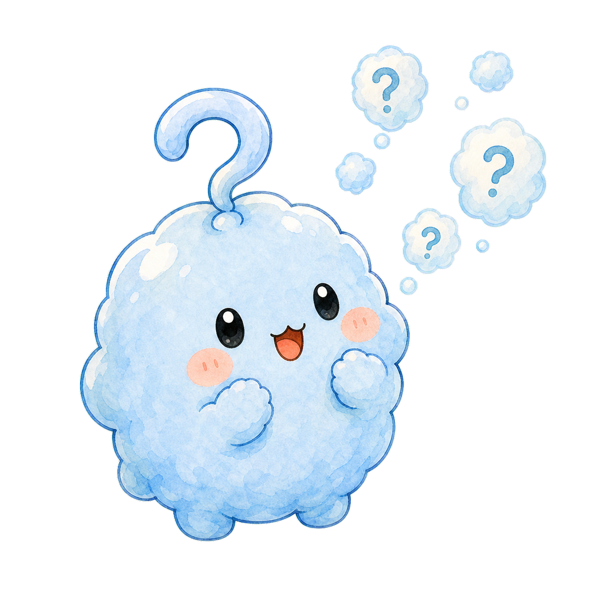
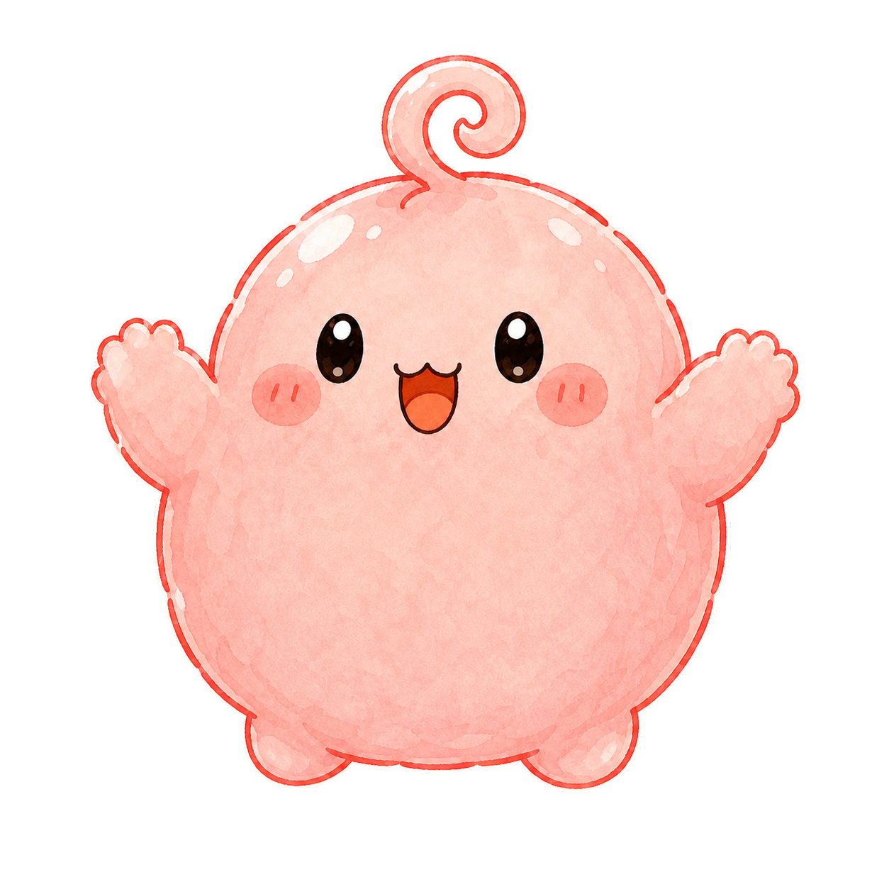
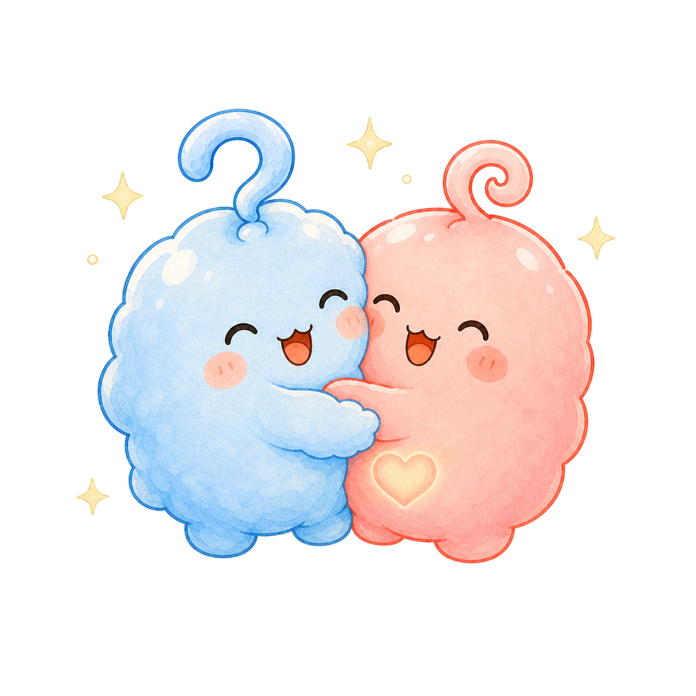
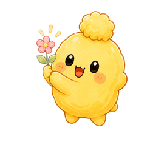
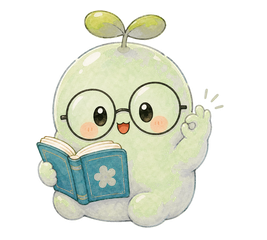
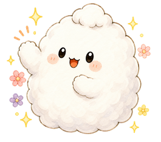

モヤちゃんとピコちゃんと
みて、きいて、かんがえて。ひらめきを集めよう。
あそびを えらぼう
おべんきょう たんけん
ぴったりの もんだいを だすよ
カードを さわってみよう

ぜんぶ みつけたね！
モヤちゃんとピコちゃんもとっても うれしいよ
つぎは どれかな？
なぜのたねを うえて、もりを そだてよう
ピースを さわって、えを つなげよう
いろをえらんで、まわりを タップしてね
じぶんだけの いろが できたね！
つながったね！
モヤちゃんとピコちゃんから
これ、なんでだろう？
ピコちゃんと答えを見つけよう！
10もん できたよ！
よくがんばったね。お水をのんだり、のびをしたりしてから、またあそぼう。



きょうは ここまで！
たくさん考えて、よくがんばったね。なぜの森のみんなも、また明日あそべるのを楽しみにしているよ。